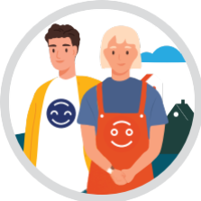

6 Osaava, hyvinvoiva ja motivoitunut henkilöstö

Tutustu Kangasalan kaupungin uusimpaan -> henkilöstökertomus <-
Henkilöstö- ja työhyvinvointiohjelman päivitys aloitettu
Työhyvinvointi-indeksi hyvällä tasolla (kaupungin keskiarvo kevät 2022 4,1 asteikolla 1-5). Seurattava työhyvinvointi-indeksi koostuu kolmesta työhyvinvointikyselyn kysymyksestä (lähiesihenkilötyö, luottamuksen ilmapiiri, töiden sujuvuus/tekemisen meininki)
6.1 Ylläpidämme ja vahvistamme kaupungin hyvää imagoa työnantajana työvoimasta kilpailtaessa
Kaupungin brändikäsikirjaan lisätty työnantajaosuus, ilmoituspohjat ja työnantaja- rekrytointimarkkinointiviestintä uudistettu, uudet rekrytointimarkkinointimateriaalit
Työnantajanäkyvyyttä lisätty (mm. erilaiset some-, Nysse- ja painetun median kampanjat, some-markkinointi avoimista työpaikoista, rekryvideot, oppilaitosyhteistyö ja näkyvyys oppilaitoksissa sekä tapahtumissa)
Tunnuslukuja liittyen rekrytointiin:
Rekrytointi-ilmoitusten katsojamäärät hyvässä kasvussa. Rekrytointi-ilmoituksia katsottu 1.1.23-13.6.23 välisenä aikana yhteensä 40 146 kertaa. Vuonna 2022 yht. 45 303 kertaa (v. 2021 24 528 kertaa)
Hakijamäärien kehitys alueilla joilla palvelualuetta koskevia kohdennettuja rekrytointikampanjoita toteutettu:
Opetus- ja koulutuspalvelut v. 2022: 1344 hakijaa, v. 2021 865 hakijaa
Varhaiskasvatuspalvelut v. 2022 534 hakijaa (v. 2021 247 hakijaa)
Ateria- ja siivouspalvelut 146 hakijaa (v. 2021 351 hakijaa)
Sijaisrekrytoinnin toimintatapojen kehittäminen (Kuntarekry, Sotender, Vakander)
Laadittu toimintasuunnitelma henkilöstön saatavuuden edistämiseksi ja suunnitelman toteutus aloitettu
Palvelukeskuksia on tuettu rekrytointimarkkinoinnissa
Onnistuneesti toteutettu muutosjohtaminen ja hyvinvointialueen henkilöstön siirto hyvinvointialueelle (saatu hyvä palaute vahvistaa työnantajamainetta)
Toimintatapojen ja -käytäntöjen kehittäminen jatkuvan parantamisen periaatteella
Kehittämishankkeiden ja –toimenpiteiden näkyväksi tekeminen Kunta- ja hyvinvointialuetyönantajien ja pääsopijajärjestöjen kampanjoissa ja Tekojen torilla 2021-2023 (palkitut kehittämishankkeet 2021-2022 ja Suomen toiseksi kekseliäimmän kunnan nimike 2021)
6.2 Työpäivä Kangasalla vahvistaa hyvän piiriä
Työpaikkojen hyvää meininkiä hyödynnetty rekrytointimarkkinoinnissa ja työnantajakuvan esille tuomisessa
Liity hyvän piiriin -slogan otettu käyttöön laajasti rekrytointimarkkinoinnissa
Perehdytyskoulutuksen kehittäminen ja muuntaminen sähköiseen muotoon (alustan kilpailutus valmistelussa, työ aloitettu)
Työntekijäkokemuksen kehittäminen (mm. E-passi- ja työsuhdepyöräetuuden käyttöönotto, palkkausjärjestelmien kehittäminen, palkitsemisjärjestelmä, johtamisen ja esihenkilötyön kehittäminen, kesätyöntekijäkokemus)
6.3 Kehitämme johtamista ja esihenkilötyötä
Onnistumme yhdessä - kaupunkistrategian toimeenpanoa tukeva, laaja-alainen koulutuskokonaisuus aloitettu (v. 2023-2025)
Johtoryhmän kehittämispäivä, johtoryhmien yhteiskokoukset, konsernin yhteistyöryhmä, esihenkilöfoorumit säännöllisesti
Esihenkilökoulutukset ja Kunta- ja hyvinvointialuetyönantajien koulutustarjonnan hyödyntäminen
Johtamisen erikoisammattitutkinnot, lähiesihenkilötyön ammattitutkinto
Uutena esihenkilönä Kangasalla-koulutus järjestetty
6.4 Korostamme osaamisen johtamista ja osaamistarpeiden ennakointia
Kaupunkistrategian toimeenpanoa tukeva koulutuskokonaisuuden suunnittelussa huomioitu osaamisen ennakoinnin näkökulmaa
Henkilöstö- ja koulutussuunnitelma painopistealueineen laaditaan vuosittain koko organisaation kattavasti
6.5 Panostamme työhyvinvointiin, työssä jaksamiseen ja työyhteisötaitoihin
Hyvinvoiva ja aktiivinen Kangasala-työhyvinvointihanke (mm. työterveyden työkykyä tukevat lisäpalvelut, ajankohtaiset tietoiskut, liikuntakampanja, esihenkilötilaisuudet/sparrit/työnohjaukset, palautuminen ja taukoliikunta-tilaisuudet, Kiila-kuntoutusten seurantapäivä, koulujen toimistosihteerien sparraus, selkäryhmä, työsuhdepyöräedun käyttöönotto)
Säännölliset työhyvinvointikyselyt, vaihtuvat teemat johdetaan henkilöstö- ja työhyvinvointiohjelmasta
Systemaattinen työsuojelun riskinarviointi
Aktiivinen työkykyjohtaminen ja aktiivisen tuen mallin mukainen toiminta
Työkykyjohtamisen koulutus esihenkilöille
Tiivis työterveysyhteistyö ja työterveyshuollon työpaikkaselvitykset
Yhteistyö Kevan kanssa ja työkykyjohtamisen 360-arviointi
Palvelukeskuksia tuettu sairauspoissaolojen vähentämistavoitteen saavuttamisessa ja yksilöasioiden hoitamisessa tarpeen mukaan
Henkilökuntaneuvoston tuottama vapaa-ajan toiminta
Vuosittainen henkilöstöilta, työyhteisöjen kehittämispäivät tms.
Sairauspoissaoloprosentti pienentynyt selvästi verrattuna vuoteen 2022 (4,36 % 31.7.23, vastaava luku 31.7.22 6,03). Vähennystä poissaoloissa kaikissa palvelukeskuksissa.
6.6 Kannustamme henkilöstöä työn ja toimintatapojen aktiiviseen kehittämiseen
Henkilöstöä kannustettu eri yhteyksissä toimintatapojen kehittämiseen, esillä myös kaupunkistrategian toimeenpanoa tukevassa koulutuksessa
Kannustimena käytössä myös palkitsemisjärjestelmä (pikapalkkiot ja kannustuspalkkiot, työyhteisöpalkkio, vinkkaa hyvä työ-kunniamaininnat, vuoden tyhyttäjä/tyhy-teko)